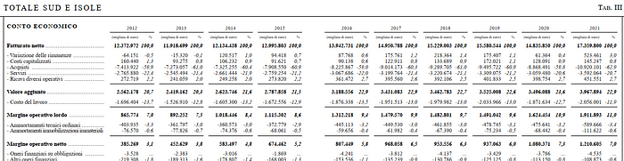

Python & Mediobanca Opendata
Mediobanca, Unioncamere e il Centro Studi Tagliacarne pubblicano annualmente il Rapporto sulle Medie imprese industriali italiane
Si tratta di macro aggregati di informazioni economico patrimoniali delle imprese, raggruppati per filiere e per macro aree territoriali e regioni, con queste caratteristiche:
- le imprese hanno sede in Italia
- non sono controllate da aziende di grande dimensione, da fondi di private equity e/o da gruppi stranieri
- hanno un fatturato annuo tra i 17 e i 370 milioni di euro
- occupano non meno di 50 e non più di 499 addetti
La serie storica va dal 2012 in poi

Il Rapporto annuale, molto professionale anche nel formato (LaTeX), è in PDF
Un consiglio: a meno che non siate boomer, non stampate MAI i PDF, o perderete il valore aggiunto del digitale (metadati, ricerce e indicizzazioni, manipolazioni, ecologia)
I dati sono resi disponibili gratuitamente in più di una trentina di file “.PRN”, un formato equivalente in sostanza ad un csv e leggibile con qualsiasi editor (es.: Notepad), nonchè, come indicato dagli autori, importabile in Excel

Ogni PRN è numerato in base al settore economico di riferimento deciso dagli autori (es. “99001764” equivale a ”BENI DIVERSI PER LA PERSONA E LA CASA (S.I.)) e i dati sono separati da una virgola; l’intestazione delle colonne è rappresentata dalla prima riga

Tutto semplice?
Voglio però raggruppare il tutto in un unico file in modo che possa interrogare i dati utilizzando un unico file
Fortunatamente tutte le informazioni hanno la stessa sequenza:
- 0:41 ‘Tab. I — Stato patrimoniale’
- 42:87 ‘Tab. II — Dati aggiuntivi’
- 88:139 ‘Tab. III — Conto economico’
Importo quindi le librerie
import os
import pandas as pd
import glob
os.chdir('D:/files/csv/Mediobanca/2024')Setto il dataframe e con un loop importo i dati
DF = pd.DataFrame()def rename_col_by_index(dataframe, index_mapping):
dataframe.columns = [index_mapping.get(i, col) for i, col in enumerate(dataframe.columns)]
return dataframenew_column_mapping = {0: 'PRN', 1: 'voce', 2:'2019', 3:'2020', 4:'2021', 5:'2022'} for file_name in glob.glob('*.PRN'):
df = pd.read_csv(file_name, sep=',')
if '2022' in df:
df = pd.read_csv(file_name, sep=',', skiprows=1)
df = pd.concat([df.iloc[:,0:2],df.iloc[:,-4:]],axis = 1)
df = rename_col_by_index(df, new_column_mapping)
df.loc[0:41,'tipo'] = 'Tab. I - Stato patrimoniale'
df.loc[42:87,'tipo'] = 'Tab. II - Dati aggiuntivi'
df.loc[88:139,'tipo'] = 'Tab. III - Conto economico'
DF = pd.concat([DF, df], ignore_index=True)
DF = DF.dropna()In un csv costruito a mano ho inserito le decodifiche di ogni cluster

Faccio quindi il merge dei due dataframe
PRN = pd.read_csv('decodifiche.csv', sep='|', encoding='utf-8')
MI = pd.merge( PRN[['area','settore','PRN']],DF, how = 'inner', on="PRN")Ed ecco il risultato finale: un csv di oltre 23K righe
MI.sample(5)
Spesso i dati sono più utili sequenzialmente e non in formato tabellare. Trasformo quindi il tutto con un Unpivot
melted_df = pd.melt(MI, id_vars=['area', 'settore', 'PRN','voce', 'tipo'], value_vars=['2019', '2020', '2021','2022'],
var_name='anno', value_name='valore')
melted_df.shape(92928, 7)
Ecco il risultato finale
un unico csv (uso il pipe “|” come separatore, e non il comma “,” che da noi interferisce con i numeri decimali)
MI.to_csv('D:/MI2024.csv', sep='|',index=False)
melted_df.sample(5)
qui il .ipynb
Bilanci e Machine Learning
Chiunque voglia esercitarsi col Machine Learning e condividere conoscenza deve farlo con Iris, Titanic, Boston, ecc; se lo vuol fare con i dati di bilancio delle imprese, in Italia e a meno che non ne abbia la possibilità in qualche facoltà universitaria con “Aida”, deve acquistarli
Ora posso studiare e creare analisi di bilancio (ratios, rappresentazioni grafiche con Power BI, ecc) o applicare qualche soluzione di Machine Learning (es.: KMeans, PCA) magari approfondendo ulteriori tematiche (rischio, credito, AML, ecc)